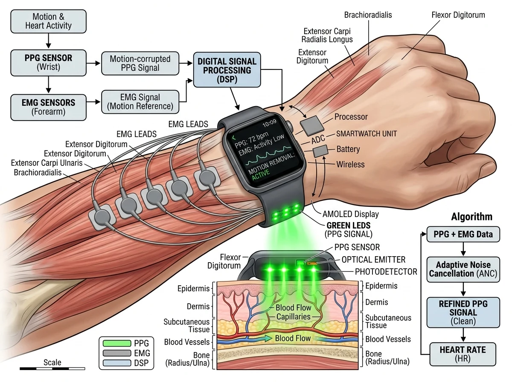

Published in IEEE Sensors Journal, vol. 22, no. 24, pp. 24197–24204, December 15, 2022. DOI: 10.1109/JSEN.2022.3219297 | IEEE Xplore: 9942941

Smartwatches and fitness wristbands predominantly rely on optical photoplethysmography (PPG) to non-invasively monitor heart rate (HR). However, during physical activities such as running, cycling, or weightlifting, voluntary muscle contractions in the wrist and forearm deform blood vessels and shift the optical sensor interface, inducing severe motion artifacts (MAs).
In this study, we demonstrate that incorporating surface electromyography (sEMG) measured directly at the wrist provides a direct reference for muscular motion noise. By fusing wrist sEMG with optical PPG signals, the proposed framework substantially improves heart rate estimation accuracy compared to traditional single-modality or accelerometer-only approaches.
While photoplethysmography functions well when the user is sedentary or asleep, hand movements and grip forces cause localized muscular activation in the flexor and extensor muscle groups. These contractions:
We investigated integrating surface electromyography electrodes into the wristband configuration alongside standard green-light optical PPG sensors:
Experimental evaluations across dynamic exercise protocols verified that:
IEEE Citation: S. Friman, A. Vehkaoja, and J. M. Perez-Macias, "The Use of Wrist EMG Increases the PPG Heart Rate Accuracy in Smartwatches," IEEE Sensors Journal, vol. 22, no. 24, pp. 24197–24204, 15 Dec. 2022, doi: 10.1109/JSEN.2022.3219297.
@article{friman2022wrist,
author = {Friman, Severi and Vehkaoja, Antti and Perez-Macias, Jose Maria},
title = {The Use of Wrist EMG Increases the PPG Heart Rate Accuracy in Smartwatches},
journal = {IEEE Sensors Journal},
volume = {22},
number = {24},
pages = {24197--24204},
year = {2022},
publisher = {IEEE},
doi = {10.1109/JSEN.2022.3219297}
}